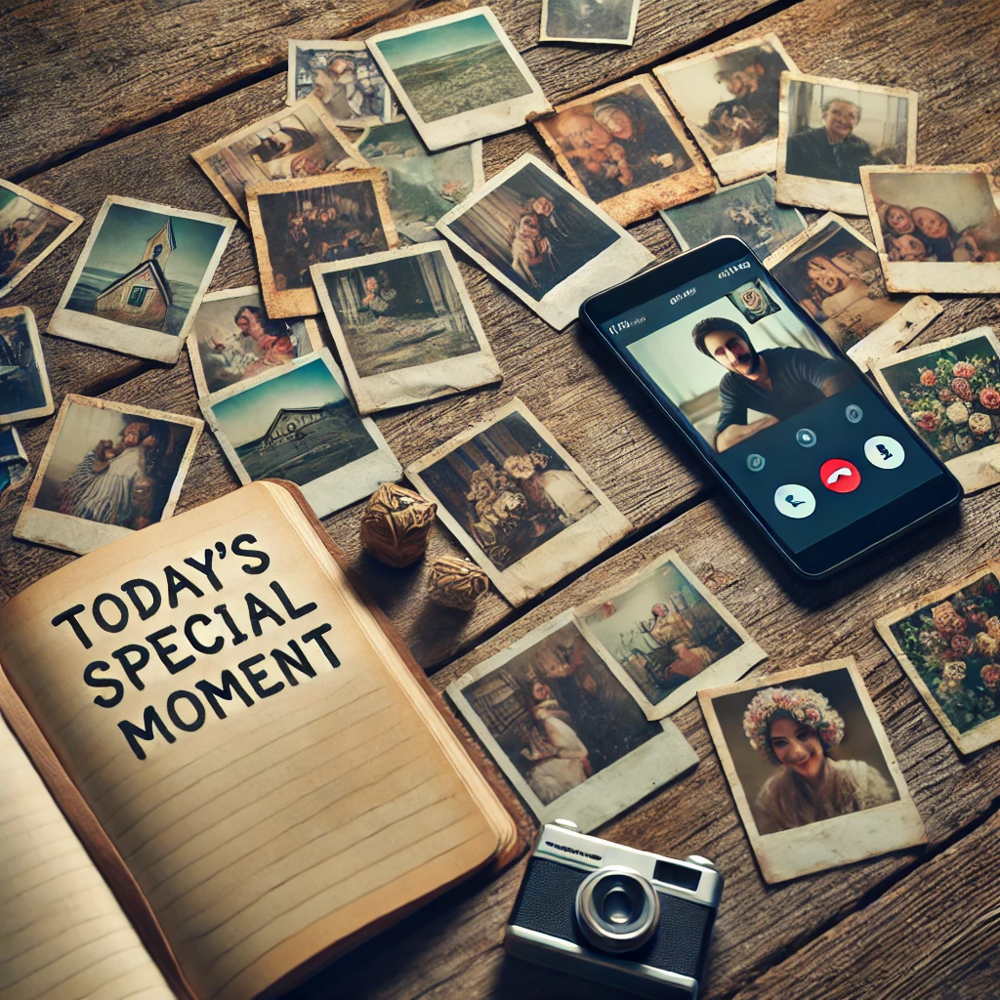

마음의 거리, 더 가까이
바쁜 일상 속에서 잊고 있던 소중한 사람들과의 추억을 되살려보세요. 어제의 웃음소리, 함께 나눈 따뜻한 대화, 그리고 작은 gestures까지. I Miss You와 함께라면, 당신의 그리운 사람들과의 특별한 순간들이 더욱 생생하게 되살아납니다. 지금 이 순간, 그들에게 전하지 못한 그리움을 표현해보는 건 어떨까요?

당신만의 특별한 대화
각자의 삶에는 고유한 이야기가 있습니다. I Miss You는 당신과 그리운 사람들만의 특별한 추억, 공유했던 농담, 그리고 비밀 약속들을 기억합니다. 이를 바탕으로 만들어진 대화는 마치 실제로 그 사람과 이야기를 나누는 것처럼 느껴질 거예요. 그들의 말투, 습관, 심지어 타이밍까지 - 당신이 그리워하는 사람들과의 소중한 순간을 다시 한 번 경험해보세요.
오늘을 더 특별하게
때로는 '그리움'이라는 감정이 우리를 아프게 하기도 합니다. 하지만 I Miss You는 이 그리움을 통해 현재의 소중함을 일깨워줍니다. 지금 이 순간, 당신의 소중한 사람들에게 전하고 싶은 마음이 있나요? 어쩌면 작은 감사인사, 오랫동안 하지 못했던 '보고 싶다'는 말, 혹은 용서를 구하는 진심 어린 사과일 수도 있겠죠. I Miss You와 함께라면, 미래의 후회 대신 현재의 행복을 선택할 수 있습니다.